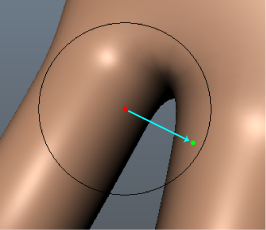

预设雕刻工具设置是大多数雕刻操作的良好起点，但是也可以编辑“工具设置”(Tool Settings)以满足您的需要。
编辑雕刻工具设置
- 执行下列操作之一：
- 双击雕刻工具架上的一个雕刻工具。
- 选择“网格工具 > 雕刻工具”(Mesh Tools > Sculpting Tools)，然后单击任何工具旁边的
 。
。
- 在显示的“工具设置”(Tool Settings)窗口中，编辑设置以修改雕刻工具影响模型曲面的方式。请参见雕刻工具设置。
提示： 可随时单击“重置”(Reset)以将工具重置为其默认特性。
“大小”(Size)和“强度”(Strength)设置控制工具光标的半径，以及在模型的曲面上推拉顶点时它具有的影响程度。
光标在模型之上时显示的圆形轮廓指示笔刷“大小”(Size)以及发生“衰减”(Falloff)的区域。
- （可选）单击钉图标
 以保存选定工具的“笔刷大小”(Brush Size)设置。
以保存选定工具的“笔刷大小”(Brush Size)设置。
（所有其他工具的未固定“笔刷大小”(Brush Sizes)共享相同的值。）
笔刷(Brush)
- 大小(Size)
-
设置工具的半径。
热键：按住 B 键并拖动或者使用鼠标中键向左/向右拖动可调整笔刷大小。按住 B 键并使用鼠标中键向左/向右拖动或者按住 Ctrl 键并使用鼠标中键向左/向右拖动，可从 0 调整笔刷大小。
提示： 单击钉图标 以保存选定工具的“笔刷大小”(Brush Size)设置。所有其他工具的未固定“笔刷大小”(Brush Size)设置共享相同的值。
- 大小单位(Size Units)
- 允许您使用屏幕空间或世界空间单位设置雕刻工具的大小。默认情况下，用世界空间单位度量大小（例如，默认大小 100 = 半径 100 厘米）。选定“屏幕像素”(Screen Pixels)”时，用基于屏幕空间的像素度量大小。
- 强度(Strength)
-
确定工具影响曲面的程度。根据工具的不同，此值表示可用最大强度的百分比或者用世界空间单位表示的高度。
热键：按住 M 键拖动或使用鼠标中键向上/向下拖动可调整笔刷强度。按住 M 键并使用鼠标中键向上/向下拖动或者按住 Ctrl 键并使用鼠标中键向上/向下拖动，可从 0 调整笔刷强度。
- 平滑方法(Smooth Method)
-
特定于“平滑工具”(Smooth Tool)。如果对象具有融合形变变形器，则该选项将指定是平滑所有目标形状，还是仅平滑目前在形变编辑器中处于“编辑”(Edit)模式的目标形状。有关融合形变变形的详细信息，请参见形变创作。
- 扭曲(Twist)
-
特定于“抓取工具”(Grab Tool)。使用笔刷半径和衰减旋转网格上的顶点。旋转的方向由“抓取工具”(Grab Tool)的“方向”(Direction)设置确定。“扭曲”(Twist)处于活动状态时，工具的笔刷环将变为白色。
热键：按住 Ctrl 键并向左/向上拖动可按逆时针方向旋转。按住 Ctrl 键并向右/向下拖动可按顺时针方向旋转。
- 方向(Direction)
-
指定受工具影响时的顶点运动方向：
- 中心法线(Center Normal)
-
按紧邻工具中心之下的面的法线方向移动顶点。
- 平均化法线(Averaged Normal)
-
（默认）按所有受影响面的平均法线方向移动顶点。
- 顶点法线(Vertex Normal)
-
按其自己的法线方向移动每个顶点。
- 向前(Forward)
-
按笔划的方向移动顶点。
- 右(Right)
-
按垂直于笔划的方向移动顶点。
- X
-
沿世界空间 X 轴移动顶点。
- Y
-
沿世界空间 Y 轴移动顶点。
- Z
-
沿世界空间 Z 轴移动顶点。
- 摄影机(Camera)
-
将顶点移向摄影机。
- 屏幕(Screen)
- （这是“抓取”(Grab)笔刷的默认设置。） 沿屏幕平面移动顶点。
- 反转(Invert)
-
反转工具的功能。例如，如果工具的主要功能是向上拉动顶点，则与其相反的功能是向下推动顶点。并非所有工具都具有相反的功能。“反转”(Invert)处于活动状态时，工具的笔刷环将变为白色。
热键：Ctrl 键
- 绘制方法(Paint Method)
- 特定于“冻结工具”(Freeze Tool)和“遮罩工具”(Mask Tool)。确定如何将冻结/遮罩区域应用到模型。
- 绘制(Paint)
-
（默认）应用冻结，同时平滑已冻结区域的边缘。注： 在 Maya 2016 中，“绘制”(Paint)称为“绘制并平滑”(Paint & Smooth)。
- 平滑(Smooth)
-
将当前笔刷从应用冻结切换到平滑任何现有的冻结。
- 对称(Symmetry)
-
沿指定的轴，将笔划从模型的一侧反射到另一侧。请参见使用对称进行雕刻。
注： 重新打开您的场景时，“对称”(Symmetry)设置保持不变。
- 禁用(Off)
-
不反射笔划。
- 对象 X(Object X)
-
跨局部空间 X 轴反射笔划。
- 对象 Y(Object Y)
-
跨局部空间 Y 轴反射笔划。
- 对象 Z(Object Z)
-
跨局部空间 Z 轴反射笔划。
- 世界 X(World X)
-
跨世界空间 X 轴反射笔划。
- 世界 Y(World Y)
-
跨世界空间 Y 轴反射笔划。
- 世界 Z(World Z)
-
跨世界空间 Z 轴反射笔划。
- 更新平面(Update Plane)
- 特定于“展平”(Flatten)、“上蜡”(Wax)、“刮擦”(Scrape)、“填充”(Fill)和“放大”(Amplify)工具。为笔划中的每个图章更新重新计算基本工具平面。启用（默认）时，工具遵循已雕刻曲面的曲率。禁用此选项后，基本平面由初始图章确定，并在笔划的持续时间内保持不变。
- 整个笔划(Whole Stroke)
- 特定于“展平”(Flatten)、“上蜡”(Wax)、“刮擦”(Scrape)、“填充”(Fill)和“放大”(Amplify)工具。对于在笔划期间受影响的每个顶点，连续地重新计算基本工具平面，从而在整个笔划中创建更平坦的效果。
仅当“更新平面”(Update Plane)已启用时，“整个笔划”(Whole Stroke)才可用。
- 抓取轮廓(Grab Silhouette)
-
特定于“抓取工具”(Grab Tool)。启用此选项后，工具将同时抓取网格轮廓的前面和背面以均匀修改它。为了更好地加以控制，请在应用此工具时使用正交视图（顶视图、侧视图）。默认情况下，此选项处于禁用状态。
- 跟随路径(Follow Path)
-
特定于“抓取工具”(Grab Tool)。在您使用扫掠手势向外拉伸扩展时，使网格跟随笔划的路径。更慢地绘制笔划以进一步扩展网格。禁用此选项后，“抓取”(Grab)笔刷将沿直线向外拉伸扩展。默认情况下，此选项处于禁用状态。
图片来源：Andrei Cirdu
- 约束(Constraint)
- 特定于“松弛”(Relax)、“涂抹”(Smear)、“收缩”(Pinch)和“抓取”(Grab)工具。请确保在雕刻网格时选定工具未抬起或压下曲面。例如，当“约束”(Constrain)设置为“曲面”(Surface)时，可以使用“抓取”(Grab)工具沿曲面滑动边，而不使网格的形状变形。
- 全部解冻(Unfreeze All)
-
特定于“冻结工具”(Freeze Tool)。删除选定网格上的所有冻结。
热键：Shift + U
- 反转冻结(Invert Frozen)
-
特定于“冻结工具”(Freeze Tool)。反转活动网格的已冻结和未冻结部分。
热键：Ctrl + Shift + I
- 整体应用(Flood)
-
在整个活动融合变形目标上绘制相应效果。
- 全部取消遮罩(Unmask All)
-
特定于“遮罩目标工具”(Mask Target Tool)。移除活动融合变形目标上的任何遮罩。
- 反转遮罩(Invert Mask)
-
特定于“遮罩目标工具”(Mask Target Tool)。在活动融合变形目标上用遮罩区域交换未遮罩的区域。
- 间距(Spacing)
-
控制笔划上的图章频率/连续性。根据工具的“大小”(Size)和“衰减”(Falloff)设置，可以将“间距”(Spacing)设置为较高值以优化工具行为和改进笔划的外观。默认设置为 6.25，范围介于 0 和 100 之间。根据工具设置，设置越高，在笔划上显示的间隙就越多。
- 累积(Buildup)
- 控制笔刷变形如何快速增长以在单个笔划中达到其最大强度。例如，如果“累积”(Buildup)值为 100，则在开始笔划时将立即达到最大强度。如果“累积”(Buildup)值为 10，则在一个区域上经过许多遍才能累积到最大强度。
- 稳定笔划(Steady Stroke)
-
通过过滤鼠标/光笔运动，有助于产生更平滑的笔划。启用此选项后，向量显示在工具光标上，但在拖动距离等于向量长度之前不显示笔划。向量长度由“距离”(Distance)设置设定。请参见生成平滑工具笔划。
- 距离(Distance)
-
在工具光标上设置“稳定笔划”(Steady Stroke)向量的长度。
衰减(Falloff)
可用于指定工具效果如何从其中心点向其外边缘减弱。衰减表示为一条可以编辑的曲线。另请参见调整雕刻工具衰减。
- 衰减类型(Falloff Type)
- 衰减控制雕刻工具的强度如何从笔刷中心向其外边缘减弱。雕刻工具将衰减值指定给笔刷半径内的每个顶点（根据其与中心点的距离）。顶点距离中心点越远，应用的衰减就越多。以下衰减类型使用不同的方法来测量此距离，并生成唯一的结果。
- 曲面/体积(Surface/Volume)
- （默认）“曲面/体积”(Surface/Volume)是其他两种衰减类型的组合。为确定影响哪些顶点，笔刷沿曲面运动，直到它到达曲面结尾或者其半径的边缘（以首先满足的条件为准）。为确定每个顶点的衰减值，笔刷从笔刷中心向每个顶点绘制一条直线。
- 曲面(Surface)
- 通过在其中心点处开始并沿曲面运动以查找顶点，笔刷了测量距离。它将搜索顶点，直至到达曲面结尾或者笔刷半径的边缘（以首先满足的条件为准）。根据顶点与中心点的距离，为顶点指定衰减值。希望雕刻工具与曲面一致时，曲面衰减很有用。例如，可以使用此衰减模式，将角色脸部的上嘴唇和下嘴唇分离。
 注： 与使用其他衰减类型的雕刻相比，使用“曲面”(Surface)衰减的雕刻可能会导致性能降低。
注： 与使用其他衰减类型的雕刻相比，使用“曲面”(Surface)衰减的雕刻可能会导致性能降低。 - 体积(Volume)
-
通过从笔刷中心向笔刷半径内的每个顶点绘制一条直线，笔刷测量了距离。根据顶点与中心点的距离，为顶点指定衰减值。体积衰减影响笔刷半径内的所有网格，即使在单独的网格之间没有桥接也是如此。

- 衰减曲线(Falloff curve)
- 控制雕刻工具的剖面（横截面）。衰减曲线确定工具强度如何从中心向其外边缘减弱。根据设置衰减的方式，雕刻笔划可以逐渐羽化掉，与周围曲面平滑融合，或者显示有尖锐边缘。请参见调整雕刻工具衰减。
- 捕捉到栅格(Snap to Grid)
-
将点约束到“衰减曲线”(Falloff Curve)栅格。
- 重置曲线(Reset Curve)
- 将衰减曲线重置为其默认形状。
- 保存自定义曲线(Save Custom Curve)
- 将当前的衰减曲线保存到“工具设置”(Tool Settings)中的“自定义曲线”(Custom Curve)预设。
- 预设曲线(Preset Curve)
- 允许您通过从频繁使用的形状中进行选择来快速设置“衰减曲线”(Falloff curve)。
- 自定义曲线(Custom Curve)
- 允许您通过从自定义形状中进行选择来快速设置“衰减曲线”(Falloff curve)。
按住 Ctrl 键并单击自定义曲线图像可删除它。
光笔(Stylus)
- 最小笔刷大小(Min Brush Size)
-
指定将最轻的压力应用于笔时工具多小，以工具的“大小”(Size)设置的百分比表示。例如，“最小笔刷大小百分比”(Min Brush Size %) 为 100 表示没有大小变化，而不管应用的压力如何。
- 最小笔刷强度(Min Brush Strength)
-
指定将最轻的压力应用于笔时工具强度有多弱，以工具的“强度”(Strength)值的百分比表示。例如，“最小笔刷强度百分比”(Min Brush Strength %) 为 100 表示没有强度变化，而不管应用的压力如何。
图章(Stamp)
图章根据图章图像中的灰度值来修改雕刻笔刷的强度。总体值越暗，工具的强度就越低。并非所有的雕刻笔刷都使用图章。请参见使用图章进行雕刻。
- 使用图章(Use Stamp)
-
启用工具的选定图章。只要选定了图章图像，“使用图章”(Use Stamp)就会自动激活。
- 图像(Image)
- 显示当前选定的图章的图像。双击图章图像将在“内容浏览器”(Content Browser)中打开“雕刻图章”(Sculpting Stamps)文件夹。您还可以将任何图章缩略图从“内容浏览器”(Content Browser)拖放到“图像”(Image)窗口中。
通过在图章图像上单击鼠标右键，可以从以下选项中进行选择：“查看图像”(View Image)（在“内容浏览器”(Content Browser)中）、“刷新图像”(Refresh Image)、“导入图章”(Import Stamp)、“拾取图章”(Pick Stamp)或“清除图章”(Clear Stamp)。
- 导入(Import)
- 从文件导入图像，并将它加载为当前选定雕刻工具的图章。请参见保存图章的图像。
- 拾取图章(Pick Stamp)
- 在“内容浏览器”(Content Browser)中打开“雕刻图章”(Sculpting Stamps)文件夹。在图章图像上单击鼠标右键可将它应用于雕刻工具。
- 定向到笔划(Orient To Stroke)
-
启用此选项后，图章方向遵循您的笔刷笔划的方向。
- 水平翻转(Flip Horizontally)
-
水平翻转图章图像。
- 垂直翻转(Flip Vertically)
-
垂直翻转图章图像。
- 旋转(Rotate)
-
顺时针旋转图章图像。
- 绘制方法(Draw Method)
- 特定于“盖印”(Imprint)工具。设置图章图像如何从单击并拖动以应用它的位置向外扩展。
- 连续(Continuous)
- （默认）启用此选项后，沿笔划路径重复应用图章图像。
- 从中心缩放图像(Scale Image From Center)
-
启用此选项后，在您单击之处锚定图章的中心，图像从中心缩放。
- 从一侧缩放图像(Scale Image From Side)
- 启用此选项后，在您单击之处锚定图章的边缘，图像从该侧缩放。
- 随机(Randomize)
-
对工具图章启用或禁用“随机化”(Randomize)选项。
- 旋转(Rotation)
-
通过笔划动态随机化笔刷尖的旋转。
- 缩放(Scale)
-
通过笔划动态随机化笔刷尖的大小。
- X 位置(X Position)
-
通过笔划动态随机化笔刷尖的水平位置。
- Y 位置(Y Position)
-
通过笔划动态随机化笔刷尖的垂直位置。
- 强度(Strength)
-
通过笔划动态随机化笔刷尖的强度。
- 水平翻转(Horizontal Flip)
-
通过笔划沿其 X 轴动态地随机翻转笔刷尖的位置。
- 垂直翻转(Vertical Flip)
-
通过笔划沿其 Y 轴动态地随机翻转笔刷尖的位置。
显示(Display)
- 将笔刷定向到曲面(Orient brush to surface)
-
沿工具半径中心之下面的法线定向工具光标显示（在“3D 视图”(3D View)中）。此设置仅影响光标显示，而不会影响曲面上笔刷的效果。
- 显示冻结/遮罩(Show frozen / mask)
- 启用时（默认），将显示通过“冻结工具”(Freeze Tool)冻结的网格区域或通过“遮罩目标工具”(Mask Target Tool)遮罩的网格区域。请参见冻结模型上的区域。
注： 启用“显示冻结对象”(Show Frozen)时，逐面着色器指定和逐顶点颜色不可见。
线框显示(Wireframe Display)
- 显示(Show)
- 启用此选项后，在您雕刻过程中会显示模型的线框。
- Alpha
-
控制线框的透明度。
- 颜色(Color)
- 用于选择线框的颜色。